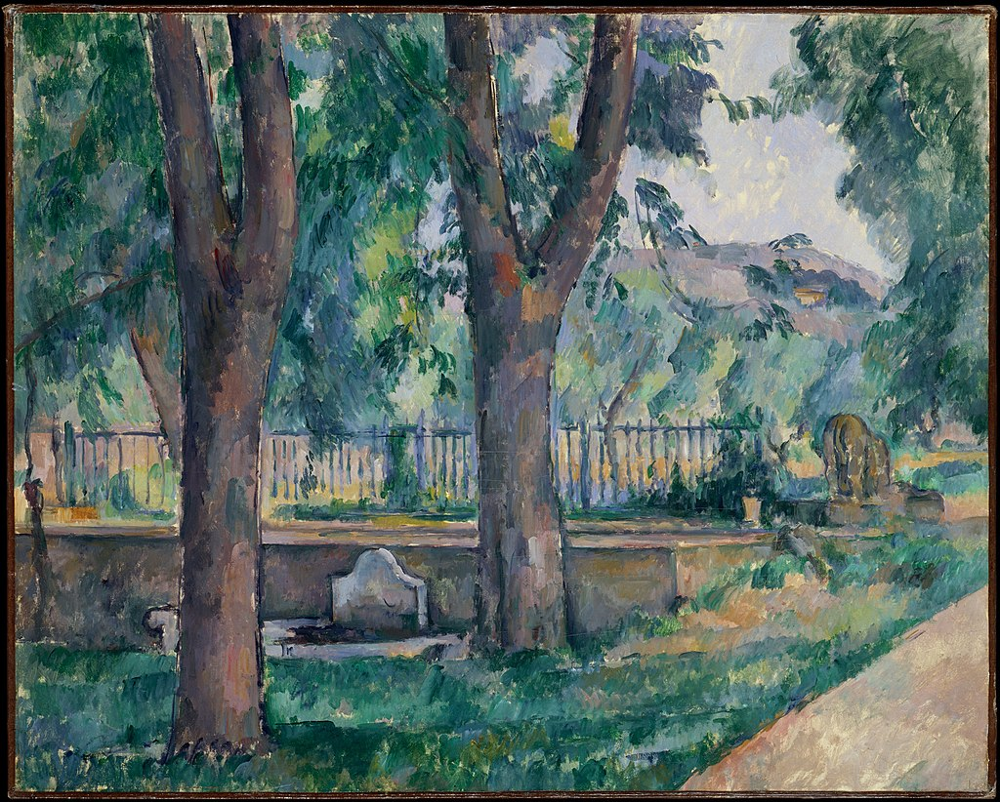

<head>
<meta charset="UTF-8" />
<meta name="keywords" content="drawing, painting" />
<meta name="description" content="drawings by Sunjy" />
<title>Sunjy</title>
<link rel="shortcut icon" type="image/x-icon" href="../../mImages/mCommon/favicon.ico" media="screen" />
<link rel="stylesheet" type="text/css" href="../../mCsses/mCommon/mCssA.css" />
<link rel="stylesheet" type="text/css" href="../../mCsses/mCommon/mCssB.css" />
<link rel="stylesheet" type="text/css" href="../../mCsses/mCommon/mCssC.css" />
<link rel="stylesheet" type="text/css" href="../../mCsses/mCommon/mCssD.css" />
<link rel="stylesheet" type="text/css" href="../../mCsses/mContent/mCssA.css" />
<link rel="stylesheet" type="text/css" href="../../mCsses/mContent/mCssB.css" />
<link rel="stylesheet" type="text/css" href="../../mCsses/mContent/mCssC.css" />
<link rel="stylesheet" type="text/css" href="../../mCsses/mContent/mCssD.css" />
</head>
<script type="text/javascript" src="../../mScripts/mContent/mContentAA.js" /></script>
<script type="text/javascript" src="../../mScripts/mContent/mContentAB.js" /></script>
<script type="text/javascript" src="../../mScripts/mContent/mContentAC.js" /></script>
<script type="text/javascript" src="../../mScripts/mContent/mContentAD.js" /></script>
<script type="text/javascript"></script> 
<script type="text/javascript">
document.write('<div class="mImgAbsolute"></div>');
/*
document.write('<p class="mFontSizeBColor" />From a white paper...</p>');
document.write('<table class="center"><tr><td>');
document.write('');
document.write('</td></tr></table>');
*/
</script>


<script type="text/javascript">
document.write('<p class="mFontSizeBColor" />The Pool at the Jas de Bouffan</p>');
document.write('<p class="mFontSizeSColor" />“The Pool at the Jas de Bouffan” by Paul Cézanne depicts the pool on Cézanne’s family’s estate, Jas de Bouffan, near Aix. Waterspouts flanked the pool in the shape of lions, one of which may be seen in this painting from behind.<br><br>Cézanne’s affection for the estate is reflected in the many views he painted of the property over a quarter-century. The road at the lower right, which was bordered with chestnut trees, is depicted in several of his compositions from the mid-1880s.<br><br>The road led from the back of the manor house to the landscaped gardens, and a washing trough is visible in the middle ground next to the pool.  <br></p>');
document.write('<table class="center" /><tr><td>');
document.write('<br>Cézanne’s affection for the estate is reflected in the many views he painted of the property over a quarter-century. The road at the lower right, which was bordered with chestnut trees, is depicted in several of his compositions from the mid-1880s.<br><br>The road led from the back of the manor house to the landscaped gardens, and a washing trough is visible in the middle ground next to the pool.  <br>" />');
document.write('</td></tr></table>');
</script>


